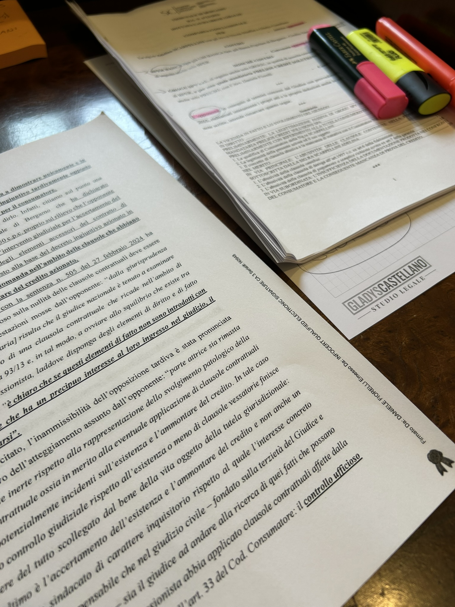

le mie esperienze FSL
Un viaggio multidisciplinare strutturato tra inclusione, impegno sociale attivo e documenti giuridici.
STUDENTE
Beatrice Gradaschi
Liceo Scientifico E. Amaldi

PW - Special Olympics
Struttura del servizio ed attività
Articolazione allenamenti: Un ciclo di 8 sessioni coordinato a partire dalle 18:30. La routine prevedeva il caratteristico saluto di squadra a centro campo, sessioni mirate di riscaldamento, lo studio tecnico dei fondamentali di pallavolo e la partita finale.
Eventi aggiuntivi: Partecipazione attiva a manifestazioni sul territorio, tra cui una partita intersquadre presso il CUS di Dalmine con ruoli di accoglienza e prima supervisione logistica per la sicurezza dei ragazzi.
Ruoli, Relazioni e Sviluppo Empatico
Integrazione e Tutoraggio: Superati i timori iniziali grazie all'accoglienza calorosa degli atleti, l'inserimento è stato immediato. Eccellente supporto da parte delle allenatrici, attente a guidare i nuovi partner nell'esecuzione tecnica e nel monitoraggio degli schemi di gioco misti (3 atleti e 3 partner).
Impatto valoriale: Comprensione profonda della collaborazione come strumento per superare le barriere sociali. L'esperienza ha evidenziato come percorsi personalizzati e sensibilità relazionale permettano il raggiungimento di obiettivi comuni.

CRE estivo
Struttura del servizio ed attività
Contesto e logica: Esperienza di PCTO svolta presso l’Oratorio Immacolata di Alzano Lombardo, con attività estese anche ad Alzano Sopra. Il programma prevedeva l'organizzazione quotidiana dei laboratori e uscite settimanali sul territorio.
Articolazione: Gestione e supervisione dei bambini in una routine strutturata tra momenti formativi, compiti, attività ludiche a tappe suddivise per fasce d'età e riunioni conclusive di verifica del team.
Ruoli, Relazioni e Soft Skills
Coordinamento: Responsabile del sottogruppo delle elementari. Ho affiancato la caposquadra nelle mansioni logistiche e nella gestione diretta degli altri animatori.
Impatto formativo: Un percorso di forte responsabilizzazione che ha potenziato le mie attitudini di leadership situazionale, mediazione e problem solving all'interno del gruppo di lavoro.



Studio Legale
Analisi tecnica ed esperienze d'aula
Impatto teorico-giuridico: Approccio analitico a materie civilistiche complesse e distanti dai programmi scolastici, tra cui il diritto bancario, tributario, immobiliare e lo studio delle tutele del fideiussore.
Attività documentale e d'aula: Esame pratico di memorie difensive, sentenze storiche, schemi ABI e funzionamento tecnico della Centrale Rischi e dei trust.
Metodo di lavoro e orientamento
Clima e rigore professionale: Inserimento in un ambiente lavorativo sereno guidato dall'avvocato Sara Pezzotta, caratterizzato da trasparenza comunicativa.
Orientamento formativo: Acquisizione di solide basi metodologiche e di precisione documentale che mi saranno sicuramente utili nel mio percorso universitario.